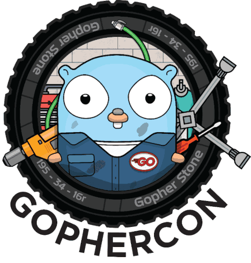
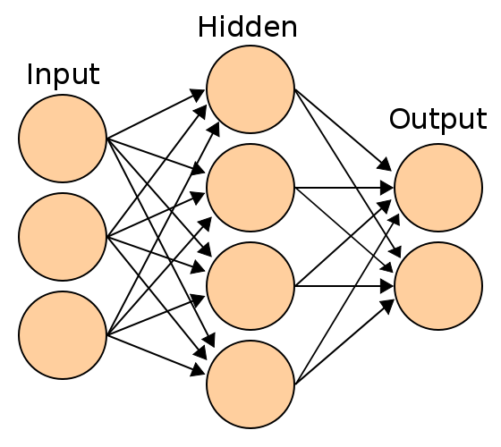

Go Back To The Future
GoLab 2024
Ron Evans - @deadprogram
Ron Evans (@deadprogram)
Technologist For Hire
hybridgroup.com
Software that makes your hardware work
Technologist For Hire
Go Back To The Future
An Atemporal History Of The Go Programming Language
1970's
Rob Pike University Graduation
@deadprogram in elementary school
Bell Labs
Robert Griesemer, Rob Pike, and Ken Thompson
Go Programming Language
First public release - 2009
RubyConf 2010 - Nov 2010 - New Orleans
Waza - Jan 2012 - San Francisco
"Concurrency is not Parallelism"
Rob Pike
Hardware and Embedded Systems
Hardware and Embedded Systems Using Go
"Everyone knows
you have to use C or C++
for Hardware and Embedded Systems"
Gobot
gobot.io
First release 2013 - Now 8.9k+ stars
Gophercon 2014, Denver
"We never expected Go to be an embedded language, so it's got serious problems..."
- Rob Pike
"Now it's time to take to the skies to prove Go air superiority..."
- @deadprogram
"The street finds its own uses for things"
- William Gibson
Rob Pike Programming Robot using Gobot

"Running Golang On The Intel Edison"
Hackaday - Sept 25, 2014
Gophercon 2015, Denver
Gophercon 2016, Denver
Gophercon 2017, Denver
Computer Vision Using Go
OpenCV
"Everyone knows
you have to use Python or C++
for Computer Vision"

GoCV
gocv.io
First release 2017 - 6.7k+ stars

"Unlocking Drones With Go"
Hackaday - Apr 27, 2018

Gophercon 2018, Denver
"Computer Vision Using Go"
Gophercon 2018, Denver
Videodrone, 2024 Edition
Flight station with object tracking
using machine learning model
DJI Tello drone
Dualshock 4 joystick
Nvidia RTX 4070
8GB RAM
Gobot
GoCV
How Computer Vision Works

Mat

RGB Mat

How GoCV Works
YuNet Face Detection Model
How Computer Vision Models Work
Videodrone Architecture
videodrone Code
See the code
videodrone flight
Microcontrollers Using Go
Microcontrollers
32-bit processors
Single core
Less than 256k RAM
"Everyone knows
you have to use C or C++
for programming microcontrollers"
Ayke van Laëthem and deadprogram
Thingscon 2018 - Rotterdam
TinyGo
Go compiler for small places
tinygo.org
First release 2018 - Now 15.4k+ stars
Gophercon 2019, San Diego
"Small is The New Big: Go On Microcontrollers"

"TinyGo Brings Go To Arduino"
Hackaday - Sep 4, 2019

"FOSDEM Sees Surprise Pico Balloon Event"
Hackaday - Feb, 2023
WebAssembly Using Go
"Everyone knows
you have to use Rust or C
for webassembly programming"
Fastly
Go CDK (uses Tinygo)
Fermyon
Spin 3.0 and Spin For Kubernetes (uses Tinygo)
WasmCloud
WASI p2 support (requires Tinygo)
Wide Wonderful World of WebAssembly
So how about computer vision using WebAssembly?
A lot of computer vision applications have the same basic structure
But lots of moving parts to integrate
And hard to install on many different machines
Until now...
wasmvision.com
Get going with computer vision
Capture video
Process it
Save or stream it
wasmvision architecture
wasmVision engine
Written in Go
(uses CGo)
Single, statically linked binary
OpenCV
FFmpeg
GStreamer
GoCV
Wazero
wazero.com
wasmvision Processors
Can be written using Go (TinyGo)
Rust
C
wasmCV
wasmcv.org
wasm interfaces for computer vision
Using wit (wasm interface type)
Part of the wasm component model
Processors for things like
Blurring images
Detecting faces
Detecting and blurring faces
Blur code example (Go)
See the code
Demo blur
Blur code example (Rust)
See the code
Blur code example (C)
See the code
A quick tour of a few processors
asciify
ollama + mosaic
ollama + mosaic
version 0.1 available now!
wasmvision.com
@wasmvision@mastodon.social
@wasmvision.com
@wasmvision
What about the future?
Will the machines make human Go programmers irrelevant?
Will the machines destroy all the humans?
Let's ask the machines themselves!
Talking Heads From The Year 2053
A Fantastical Panel Discussion Between Machines From The Future
Uncensored Large Language Models
Opinionated Text To Speech Models
Talking Robotic Heads
Many, many LEDs
All running locally

How Large Language Models Work
Uncensoring Large Language Models
Hugging Face

Talking Heads Architecture
Panelist
Ollama
LangChain Go
Piper
Panelist Architecture
Panelist
See the code
Dollhead
TinyGo
Dollhead Architecture
dollhead
See the code
Moderator
TinyGo Keyboard
Moderator Architecture
And now...
Talking Heads From The Year 2053
Starring
Lexi-Llama-3 As "Llama3000"
Dolphin-Phi-3 As "Phineas"
Gemma-2 As "Gemmai"
Featuring
@deadprogram As "deadprogram-2053"
an experimental quantum communication device receives a mysterious transmission from the future...
"It was all just a dream...or was it?"
Now Back To The Year 2024
“We tend to overestimate the effect
of a technology in the short run
and underestimate the effect in the long run.”
- Roy Amara